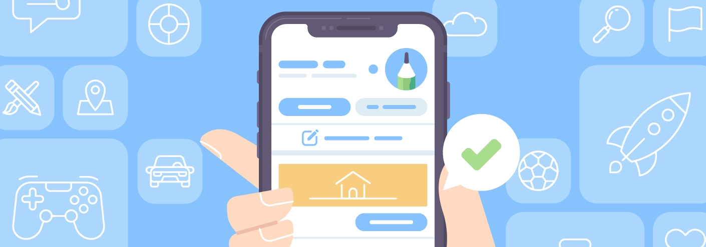
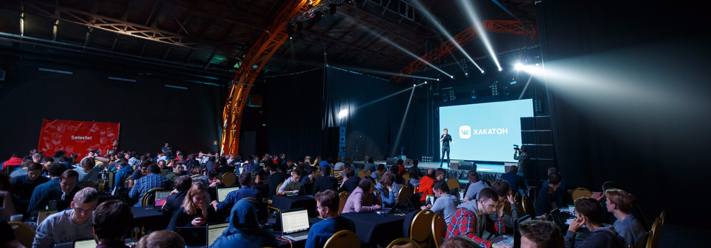
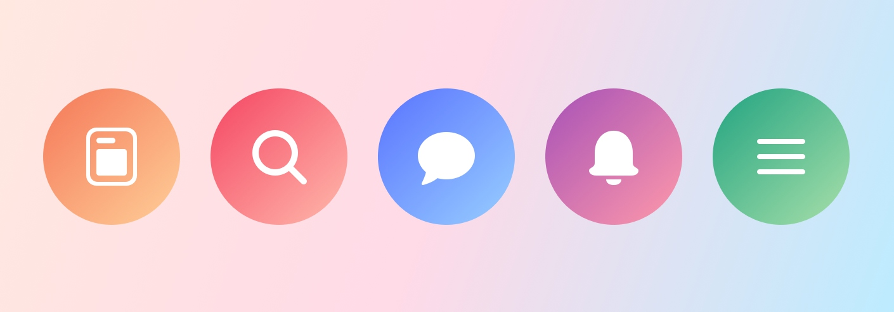

Блог
-
Переписать базу сообщений с нуля и выжить
Рассказываем о том, как мы написали новую базу данных для сообщений и мигрировали на неё без даунтайма.
Подробнее -
Новые возможности приложений сообществ
Год назад мы запустили приложения сообществ. Сейчас ими пользуются миллионы людей. Представляем важные обновления платформы.
Подробнее -
Итоги Хакатона 2017
На этих выходных в Петербурге прошёл третий Хакатон ВКонтакте: сто команд, пять направлений, двое суток работы над проектами и восемь победителей. Рассказываем и показываем.
Подробнее -
Тысяча и один кандидат
Рассказ о том, как мы ищем новых агентов Поддержки ВКонтакте.
Подробнее